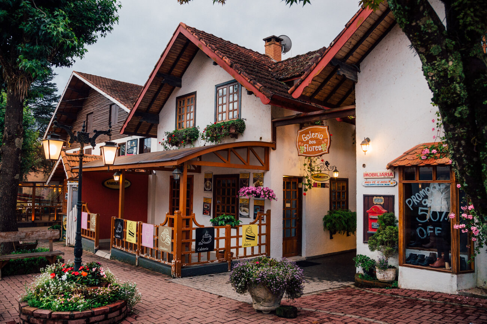
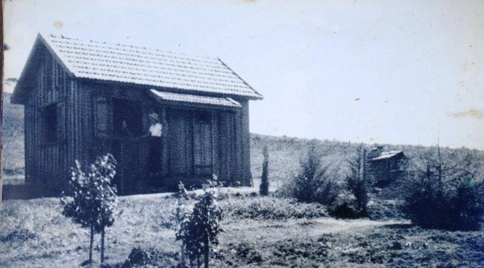

Localizada em Minas Gerais, sendo a cidade mais fria do estado, Monte Verde conta com uma arquitetura aconchegante e sofisticada, uma gastronomia refinada e passeios que podem agradar varios gostos.
Neste site voce descobrirá mais sobre a cidade, conhecendo parte
da sua história e alguns dos seus pontos turistícos.
Entre os vários imigrantes da Letônia que chegaram ao Brasil em 1913, Verner Grimberg e sua família, que veio morar, junto a sua esposa Emília Leismer, em Campos do Jaguary (município de Camanducaia) onde lembrava Campos do Jordão que é o lugar onde passaram a lua de mel. Um lugar distante que era apenas acessível pelas montanhas (sem estradas), então trouxe sua família, construiram uma fazenda que depois o lote foi compartilhado por amigos e familiares.
Também outros imigrantes europeus chegaram ao lugar com a esperança de uma vida ideal a eles, depois de várias mudanças, se tornou Monte Verde, o nome da cidade é originado do nome da família: “grin” (verde) e “berg” (monte).
O início da trilha é o mesmo para a Pedra Redonda,com muitos trechos onde o piso é bem irregular. Quando atingimos o cume da Serra da Mantiqueira e passamos por abismos muito altos, onde a emoção é intensa.
Com 1900 metros de altitude, o Platô é uma pedra plana com uma bela vista para o Vale do Paraíba. São cerca de 40 minutos para se chegar até o topo e, apesar da trilha ter alguns trechos razoavelmente íngremes, não é difícil de percorrê-la.